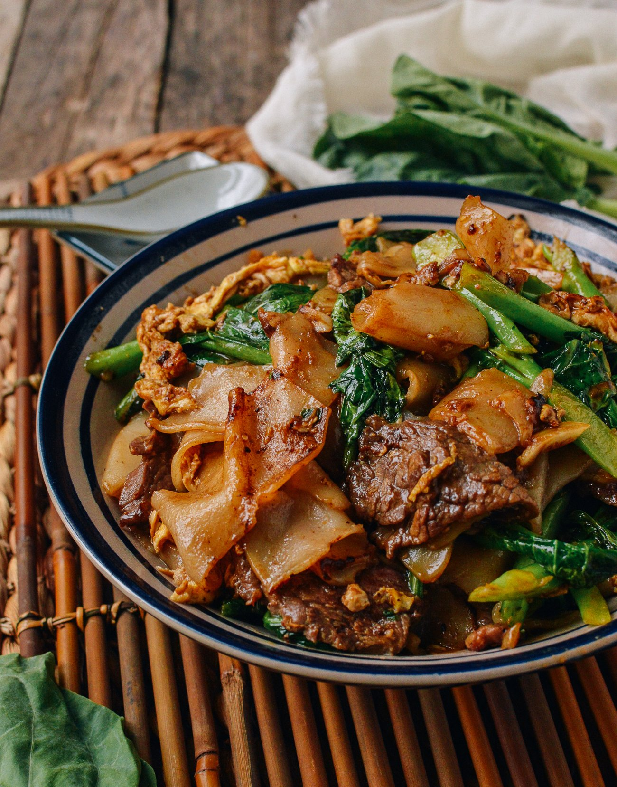

Pad See Ew Recipe

Pad See Ew is a delicious and popular Thai noodle dish served at many Thai restaurants,
or you can find it sold as street food in Thailand.
In translation, "pad" means "stir-fry" and "see ew" means "soy sauce".
The noodle sauce is made of a combination soy sauce, oyster sauce, vinegar, sugar and water.
It complements the stir-fried noodles, protein and veggies perfectly!
Ingredients:
- 8 oz wide rice noodles
- 2 tbsp vegetable oil
- 2 cloves garlic, minced
- 1 cup broccoli florets
- 1/2 cup sliced carrots
- 1/2 cup sliced bell peppers
- 1/2 cup sliced chicken breast or tofu
- 2 eggs, lightly beaten
- 3 tbsp soy sauce
- 1 tbsp oyster sauce
- 1 tsp sugar
- 1 tsp rice vinegar
Instructions:
- Cook the rice noodles according to package instructions. Drain and set aside.
- In a small bowl, mix together soy sauce, oyster sauce, sugar, and rice vinegar. Set aside.
- Heat vegetable oil in a large skillet or wok over medium-high heat. Add minced garlic and sauté until fragrant.
- Add chicken or tofu and cook until browned and cooked through.
- Add broccoli, carrots, and bell peppers. Stir-fry for 3-4 minutes until vegetables are tender-crisp.
- Push the ingredients to one side of the skillet and pour the
Home